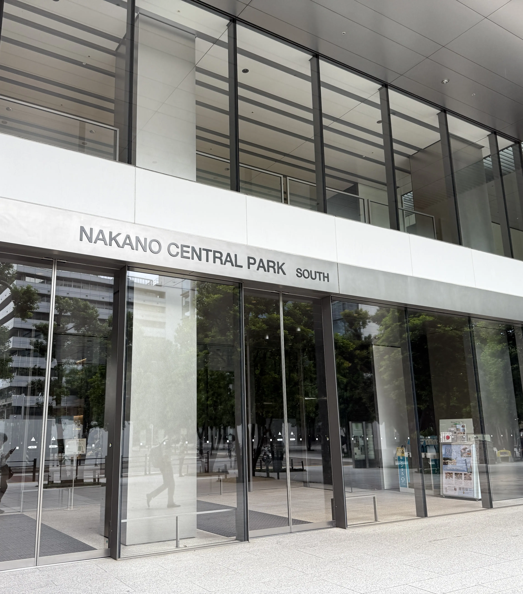
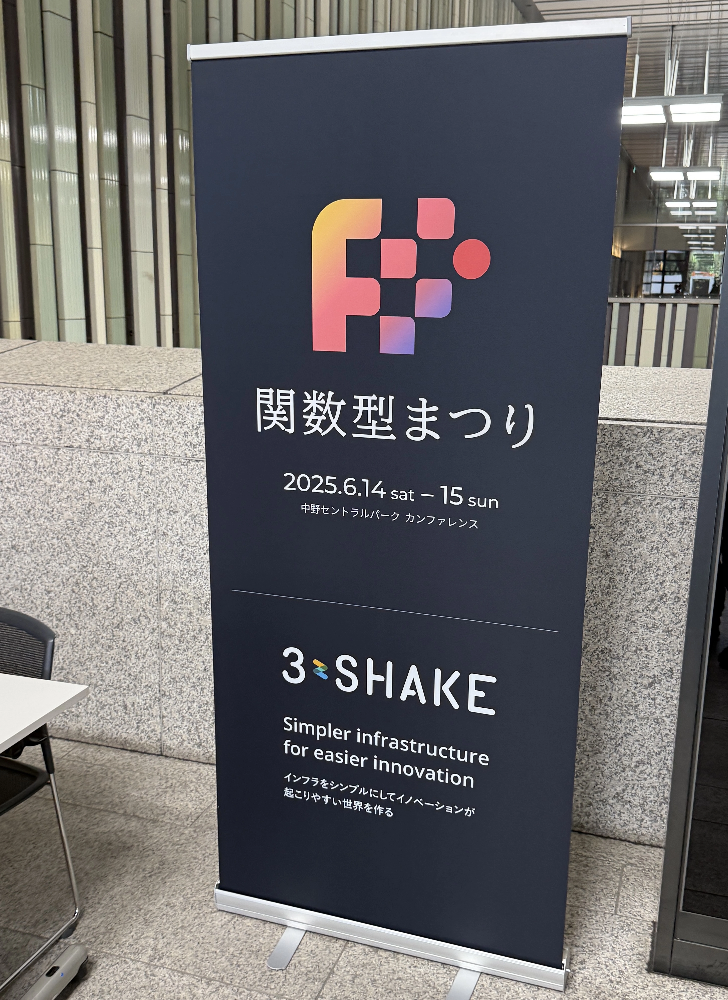
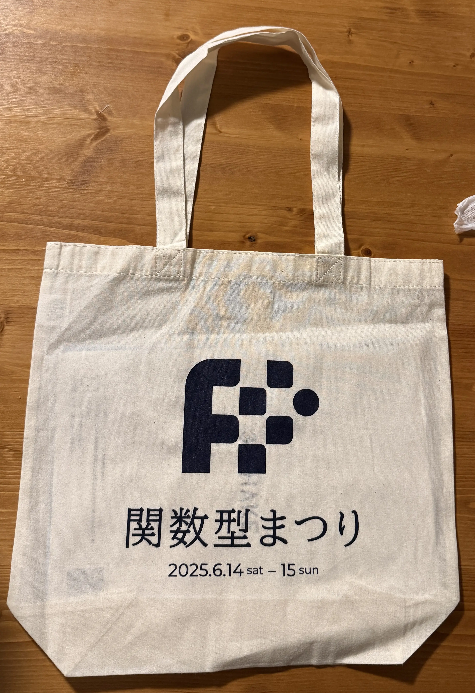
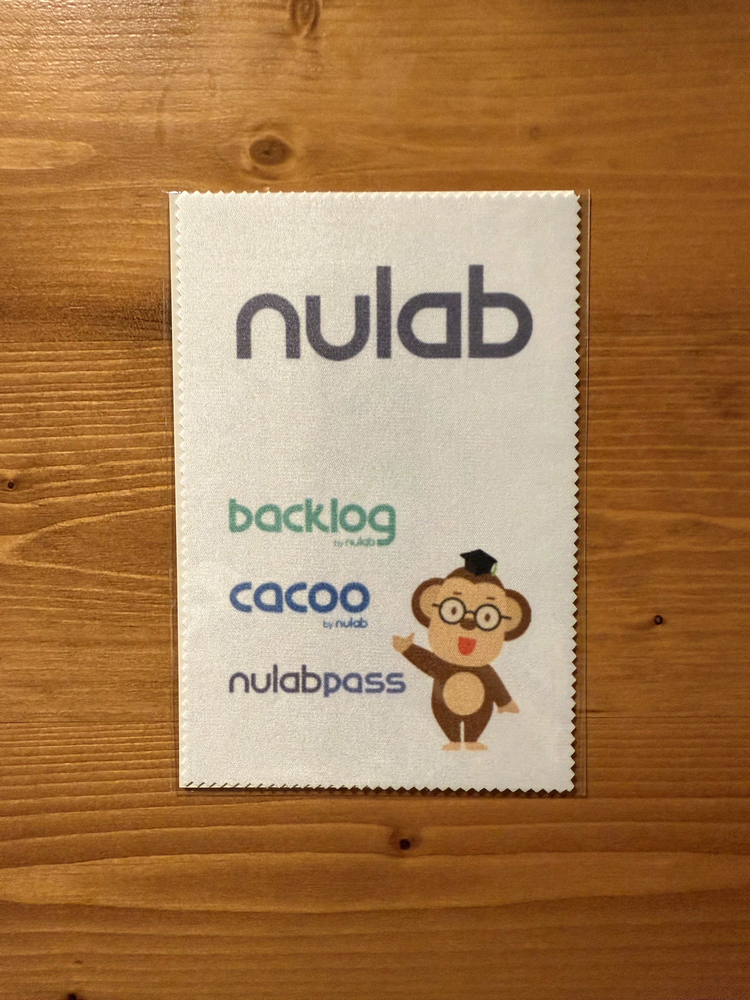

関数型まつり2025に参加した

目次
2025/06/14(土)、2025/06/15(日)に中野セントラルパークで行われた関数型まつり2025に参加した。


筆者はElmやRustの開発体験を気に入っており、Webアプリケーションのサーバーサイドを関数型言語で書くことに興味があったので参加してみた。
関数型言語テイスティング: Haskell, Scala, Clojure, Elixirを比べて味わう関数型プログラミングの旨さ - lagénorhynque/カマイルカさん#
lagénorhynque/カマイルカさんによるHaskell, Scala, Clojure, Elixirの紹介と比較を行う発表。
部分適用や関数合成やパイプ演算子などElmで便利だった言語機能を思い出しながら聞いていた。
文法を見ていると、Elmの文法はかなりHaskellに近いようだった。(ML系と呼ばれるらしい)
あとは関数型かつ動的型付け言語の実際のアプリケーション開発での書き味が全然想像がつかないのでちょっとElixirやClojureを書いてみたくなった。質疑応答でも触れられていたが、実際にML系の言語とlispなどの動的型付け言語の関数型言語ではメンタルモデルが違うらしい。
発表の最後に関数型プログラマのメンタルモデルとして以下のようなことを紹介されていて、自分が関数型言語から得た学びと重なる部分が多かった。
- 適切な制約が解放をもたらす
- 純粋関数を基本にしてコードを組み立てていく
- いつでもどこでも破壊的に更新できるデータ構造は怖いため不変/永続データを基本に
- 適切な型を定義することで不正値を表現不能にしてより型安全に
- 単純で安定したブロックを基礎に全体を構成したい
- 式思考、宣言的、合成可能
関数型言語を採用し、維持し、継続する - 松澤 有さん#
Siiibo証券株式会社のCTOである松澤さんによる自社プロダクトのフロントエンド、バックエンドの開発言語として関数型言語(Elm, Elixir)をなぜ採用したのか、そしていかにして維持し、継続しているかについての発表。実は主にこの発表を聞くために関数型まつりに参加したので良い発表を聞けてよかった。
https://zenn.dev/siiibo_tech/articles/adopting-fp-languages
結局はラストマンシップを持って自分がなんとかするという気概が重要だという話が一番印象的だった。これは関数型言語を業務で書いているわけではない自分にも大いに参考になる話だと思っていて、結局どんな技術を採用したかやCTOかメンバーかなどにかかわらず、このラストマンシップを持っているエンジニアが多ければ多いほど開発組織は強固になるんだろうなと思った。
また「アウトリーチを怠らなければ意外と世の中にちゃんと仲間はいる」ということをおっしゃっていて、使用言語がメインストリームであろうとなかろうと外部発信を通してコミュニティに貢献したり認知を獲得することの重要性を改めて感じた。やっていき。
総じて松澤さんのエンジニアとしてのマインドセット的な部分がとても参考になった。
技術的な内容に関しては、コードレビューの話とUpkeepの話が参考になった。
コードレビューに関しては以下のようなことをおっしゃっていて、とても参考になった。特に2番目に関しては、前提としてコード品質を重要視するマインドがチームに装備されている必要があると思っていて、それをどう実現しているのか気になった。
- 自分がいいと思う技術であっても、それを伝道できなければあとが続かない
- チームにとって良いコードとはどのようなものか、ということを感覚、信念として共有できる状態に持っていくことを目指している
- 人は忘れるし、一度言っただけで身につくことは誰であれないので繰り返し伝えていくことが重要
Upkeepとは維持費の意味で、ここでは依存ライブラリや言語自体のバージョンアップなどのことを指す。こまめにバージョンアップ作業をやっておくことでいざというときに言語やライブラリの新機能をすぐ取り込めたり、巨大なバージョンアップのせいでデグレするリスクを低減できたりと良いこと尽くめだと改めて感じた。（もちろん簡単ではないが）
あとはバージョンを最新に保つという行為に名前をつけたことがなかったのでUpkeepという語で表現するのはいいなーと思った。
以下発表を聞きながら取ったメモ。(発表を聞きつつスライドを見ながら書いたメモなので誤りが含まれる場合があります🙇)
技術選定の方針#
- CTO, Founding Engineerが技術構成を選ぶにあたっての観点
- まともなモノを継続的に提供するに足る機能があるか
- それを実際につくるヒトを継続的に集められるか
- （スタートアップなら）
- （上記2点を説得材料として）カネを集められるか
非メインストリーム言語でどうやっていくか#
- ElixirやElmはメインストリームと目されているとは言えず、モノ・ヒト・カネの要素を自信を持って揃えるには弱い
- とはいえ、良いと感じた技術があって、良いものを作れると検証できたのであればあとは自分がやるかどうかでしかない
- 勝手に機会は降ってこない
- 勇気と周りを巻き込んで走り続ける力が重要
コードレビューの技術#
- 自分がいいと思う技術であっても、それを伝道できなければあとが続かない
- 健全で有意義なコードレビューのやり取りがどのようなものか？という経験とその内面化が重要
- どういうコードがチームにとって良いコードかを伝道する
- 感覚、信念として共有できる状態に持っていきたい
- 以下の理由でコードレビューで繰り返し伝えていくことが重要
- 人は忘れる
- 新しい人は入る
- 一度言っただけで身につくことは誰であれ、ない
Upkeep#
- Upkeepとは維持費の意味で、ここでは依存ライブラリや言語自体のバージョンアップなどのことを指す。
- Upkeep恐怖症にならずにこまめにやれる環境をつくる。
- (バージョンアップ作業がやりやすいのは言語の大きな加点項目)
- Elixirで静的型検査の導入が2022年に発表された
- Upkeepしておくと、こういった新機能もすぐに取り込める
情報収集#
- 言語公式フォーラム, ML, Slack, Discordのウォッチ
- そもそもコミュニティがデカすぎないので最新動向をすべて追うのがそこまで大変ではない
- コンパイラ、主要ライブラリのissue trackerも購読する
- チーム内で抱えてる課題と似たような話題も出たりする
コミュニティ還元#
- フォーラムでの質問を見るだけでなく回答もする
- 小さいコミュニティなので自分が第一人者、Front Runnerである可能性もある
- 国内外の勉強会参加、主催協力も積極的に行う
採用#
- やれることをやり、アウトリーチもすることが採用に直結する
- 非メインストリーム言語だとその言語を業務で書くにはそもそも会社の選択肢が少なかったりするので、意外とマッチングしやすかったりもする
続けていく気概#
- 結局大事なのは言いだしっぺがケツを持つ気概があるかどうか
- アウトリーチを怠らなければ意外と世の中にちゃんと仲間はいる
産業機械をElixirで制御する - 菊池 豊さん#
菊池 豊さんによる複数の水力発電の制御ソフトウェアをElixirで書いた経験を紹介する発表。
Elixirは書きやすく、コミュニティも盛り上がっているという話を聞いてちょっと書いてみたくなった。
以下メモ。
課題#
- Python
- 並行プログラミングができなかった
- コンパイラでの支援が期待できなかった
- リプレイス先の候補はGo, Rust, Haskell, Erlang, Elm
Why Elixir#
- 世俗型関数型言語
- 関数型であることにこだわりすぎず使いやすさがある
- コミュニティも楽しかった
- 並行性
- アクターモデル
- パイプ演算子
- パターンマッチ
Elixirにないもの#
- 型
- 静的型解析がほしい
Lean言語は新世代の純粋関数型言語になれるか？ - 井上亜星さん#
井上亜星さんによるLean言語の紹介の発表。
この発表でLean言語という言語の存在を知った。純粋関数型言語でありながらforループやwhileループを書けるのはユニークだなーと思った。
What I have learned from 15 years of functional programming - Scott Wlaschinさん#
Scott Wlaschinさんによる関数型プログラミングでの学びを共有する発表。
「直和型とレコード型を駆使しドメインモデリングを正確に表現することで保守性が向上するだけでなく動作可能なドキュメントとしても機能する」という話が印象に残った。
前者のメリットは以前から感じていたが、後者の観点はなかったので面白かった。（言われてみればそれはそうという感じだが）
以下メモ。
- パイプライン指向で書くことで保守性の高いコードを書くことができる
- 以前はSOLID原則を満たすことを意識しすぎてしまいうまくいかなかったが、パイプライン的な志向でコードを書くことで自然と綺麗なコードを書くことができ、SOLID原則も自然と満たすことができるようになったとのこと
- ドメインモデリング
- 直和型をうまく使ってドメインモデルを正確に表現する
- 保守性が高くなり、バグが減る
- 実行可能なドキュメントとしても機能する
- 直和型をうまく使ってドメインモデルを正確に表現する
- Railway Oriented Programmingを使うことでエラー処理を伴う処理を保守性高く書くことができる1
F#の設計と妥協点 - .NET上で実現する関数型パラダイム - 猪股 健太郎さん#
猪股 健太郎さんによるF#の言語設計の特徴、設計意図を紹介する発表。
純粋関数型言語なのかと思っていたが、命令形っぽい書き方もできることは知らなかった。他の.NET言語との相互運用性があるのも便利そう。
以下メモ。
概要#
- OCamlに大きな影響を受けている
- 金融工学、データサイエンス、科学計算、Webアプリなどで活用されている
- F#をJavaScriptにトランスパイルするコンパイラもあり、フロントエンドも書ける
F#の特徴#
- 静的型付けの非純粋関数型言語である。
- デフォルトはイミュータブルだがmutableにもできる
- .NETランタイムは仮想マシン型
- C#, F#など複数言語を.NETランタイム上で動かす前提で設計されており共通中間言語、共通型システム、共通言語仕様を備える
- ホスト環境との相互運用性
- F#で書かれたコードは他の.NET言語から自然かつ安全に利用可能
- マルチパラダイム言語
- 関数型プログラミングのパラダイムを核に、オブジェクト指向プログラミングの要素も備える
- クラスや構造体も書ける
言語設計の意図#
プログラマーが命令的なコーディングから関数型のコーディングへ移行する際のハードルを下げることを意識した設計になっているらしい。
マイクロサービス内で動くAPIをF#で書いている - ayato-pさん#
ayato-pさんによるマイクロサービスの1サービスをF#で書く際の設計や悩みどころを紹介する発表。
https://speakerdeck.com/ayato0211/maikurosabisunei-dedong-kuapiwof-number-deshu-iteiru
ドメイン設計の際に容易にOptionを使わずにenumの別のvariantとして表現する、という考え方はRustなどでも活かせそうだと思った。別の概念であれば別の型として表現するのが大事そう。
以下メモ。
- どんなチームで採用したのか
- ペアプログラミングを中心に100人超の組織で開発している
- モノリス -> マイクロサービスの移行をやっている
- マイクロサービスの各APIは多種多様な言語で書かれている
- F#導入以前のプロダクトチーム
- JVM系、Elixir, Go, Rust, OCaml, Haskellなども採用
- .NET系の言語は採用されていなかった
- どう導入したのか
- システムのコアにいきなり採用するのはリスキーだったのでなにかあってもまずは影響が少ないサブシステムで採用
- なぜF#か
- 静的型付け
- シンタックスが簡素
- .NETの資産を活用できる
- F#らしさを活かした設計
- Optionなどを入れずに判別共用体を使って設計する
- e.g. 上場企業と非上場企業を表現するときに
isListed: bool,listedAt: Option<DateTime>のように表現するのではなく…そもそも別のvariantとして表現するtype Company = { id: CompanyId name: string isListed: bool listedAt: Option<DateTime> }type Listed = Listed of listedAt: DateTime type CompanyProfile = { id: CompanyId name: string } [<RequireQualifiedAccess>] type Company = | Listed of CompanyProfile * Listed | UnListed of CompanyProfile
スポンサーブース#
Jane Streetのエンジニアの方にお聞きしたがJane StreetではフロントエンドとサーバーサイドをOCamlで書いているらしい（！）ブースでお話した方も関数型言語が書きたくて入社したそうで、関数型言語への愛を感じた。
ブースでいただいたノベルティのTシャツもめっちゃOCamlだった。
ノベルティ#
入場時にロゴ入りのトートバッグがもらえた。 
Nulabさんのノベルティのマイクロファイバークロス。実用的でありがたい。 
まとめ#
今は業務で関数型言語を使うことはないが、関数型言語の考え方を取り入れることで非関数型言語でもより良いコードを書けるようになると改めて感じた。
個人で初めてオフラインの勉強会/カンファレンスに参加したが普通に楽しかったのでまた行ってみようと思う。
つけ麺情報#
二代目えん寺 がとても美味しかった。

-
Elm Patternsでも紹介されていた のを思い出した。改めて読み直してみよう。 ↩︎